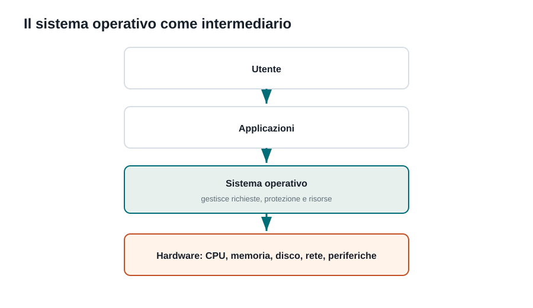
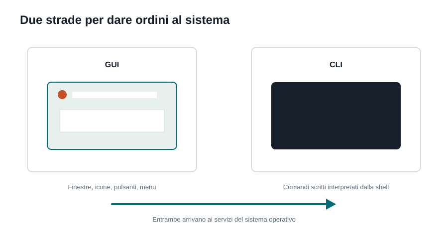

Capitoletto 1
Interazione con il sistema operativo
Come utenti e programmi comunicano con il sistema operativo attraverso interfacce grafiche, terminale, shell e comandi.
Obiettivi della lezione
- Capire che il sistema operativo è un intermediario tra utente, programmi e hardware.
- Distinguere interfaccia grafica, terminale e shell.
- Usare il concetto di comando, argomento, percorso e variabile d'ambiente.
- Saper spiegare perché la riga di comando è utile in informatica.
Il sistema operativo come intermediario

Il sistema operativo è il software di base che rende utilizzabile il computer. Riceve richieste dagli utenti e dai programmi, poi le traduce in operazioni sulle risorse fisiche: CPU, memoria, disco, rete, schermo, tastiera e altre periferiche.
Questa separazione è importante: un programma di videoscrittura non deve conoscere i dettagli della scheda video o del disco. Chiede al sistema operativo di mostrare testo, salvare file o stampare; il sistema operativo controlla permessi, risorse disponibili e driver.
GUI e CLI

GUI e CLI non sono in competizione: sono strumenti diversi per situazioni diverse. La GUI conviene quando l'operazione è visiva, occasionale o richiede di esplorare opzioni. La CLI conviene quando l'operazione deve essere precisa, ripetibile, automatizzabile o eseguita su un computer senza interfaccia grafica, come molti server.
| Situazione | Meglio GUI | Meglio CLI |
|---|---|---|
| Copiare un singolo file | Trascinare il file in Esplora file. | Usare copy o cp se si conosce già il percorso. |
| Rinominare 200 file | Scomodo e lento. | Uno script o un comando ripetibile evita errori manuali. |
| Configurare lo sfondo o il mouse | Pannelli grafici chiari e immediati. | Di solito non conviene. |
| Gestire un server remoto | Spesso la GUI non è installata. | SSH e comandi testuali consumano poche risorse. |
| Diagnosticare la rete | Utile per vedere lo stato della connessione. | ping, ipconfig, tracert danno risultati precisi. |
Shell, terminale e comandi
Il terminale è l'ambiente in cui scriviamo. La shell è il programma che interpreta ciò che scriviamo. Un comando può avere argomenti, cioè informazioni aggiuntive che specificano su cosa lavorare.
cd Documenti
mkdir esercizi
dirQui cd cambia cartella, mkdir crea una directory e dir mostra il contenuto. Su Linux comandi equivalenti frequenti sono cd, mkdir e ls. Il concetto è più importante del nome esatto del comando: si sta chiedendo al sistema operativo di navigare e modificare il file system.
Percorsi e variabili d'ambiente
| Concetto | Significato | Esempio |
|---|---|---|
| Percorso assoluto | Indica la posizione completa partendo dalla radice del sistema. | C:\\Users\\Alberto\\Documenti |
| Percorso relativo | Parte dalla cartella in cui ci si trova ora. | esercizi\\lezione1.txt |
| Variabile d'ambiente | Valore letto dai programmi per conoscere configurazioni e percorsi. | PATH, HOME, USERPROFILE |
Le variabili d'ambiente aiutano i programmi a trovare strumenti e cartelle importanti. Per esempio PATH contiene un elenco di posizioni in cui la shell cerca i programmi da avviare.
Esercizi guidati
- Apri un terminale e individua la cartella corrente con il comando adatto al tuo sistema.
- Crea una cartella chiamata
prove-tpsite poi entra al suo interno. - Spiega a un compagno la differenza tra terminale e shell.
- Scrivi tre situazioni in cui useresti la CLI invece della GUI.
Domande con risposta semplice
Che cos'è un sistema operativo?
È il software di base che gestisce l'hardware e permette a utenti e programmi di usare il computer.
Che differenza c'è tra terminale e shell?
Il terminale è l'ambiente in cui si scrivono i comandi; la shell è il programma che li interpreta ed esegue.
La GUI è più importante della CLI?
No. La GUI è più comoda per molte azioni visuali, la CLI è più potente per automatizzare e amministrare sistemi.
Che cos'è un percorso assoluto?
È un percorso che indica la posizione completa di un file o di una cartella partendo dalla radice del sistema.
A cosa serve una variabile d'ambiente?
Serve a conservare informazioni di configurazione che i programmi possono leggere quando vengono eseguiti.
Per ripassare
Prima osserva il diagramma, poi leggi la spiegazione. Se riesci a rispondere alle domande finali senza copiare le frasi del testo, hai capito davvero l'argomento.